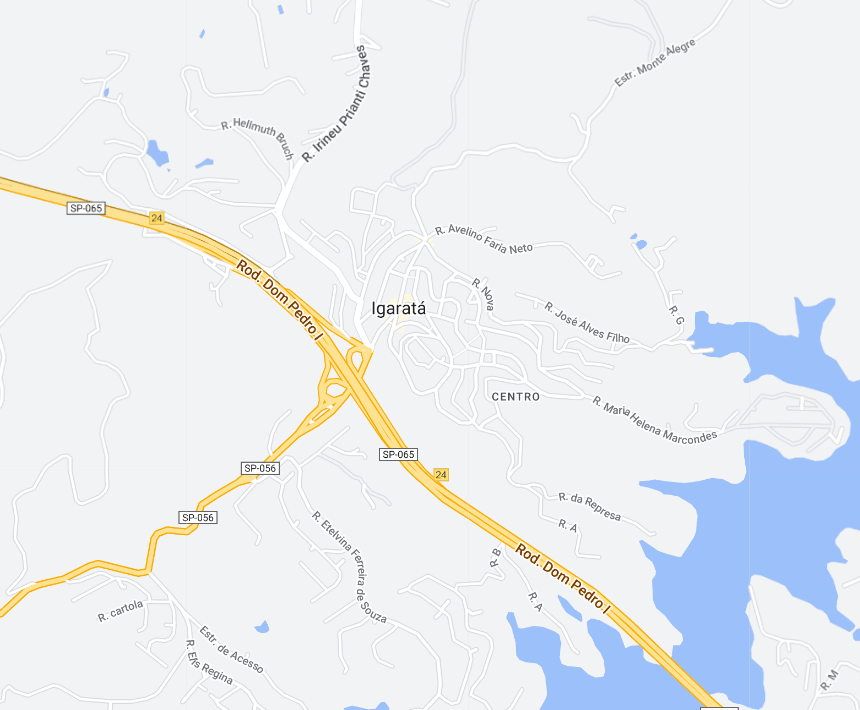

Igaratá - Geodex

Município de Igaratá
-
Populacão: 9.631 pessoas
-
Área: 292,953km²
-
Fundação: 28 de Fevereiro de 1992
-
Distância da Capital: 89km
Igaratá é uma cidade localizada no estado de São Paulo, no Brasil. Fundada em 1º de janeiro de 1993, a cidade possui uma rica beleza natural, com destaque para o seu principal atrativo, a Represa do Jaguari, que oferece oportunidades para atividades aquáticas e contato com a natureza. Com uma população acolhedora e um clima agradável, Igaratá é um destino procurado por turistas em busca de tranquilidade e momentos de lazer junto à natureza.